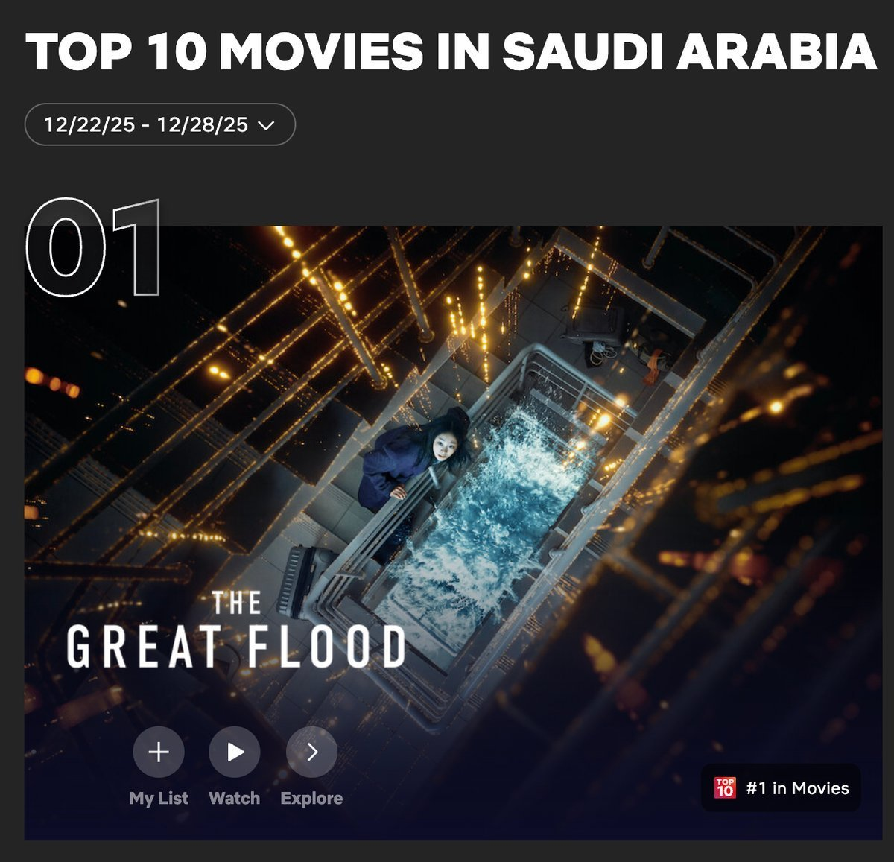
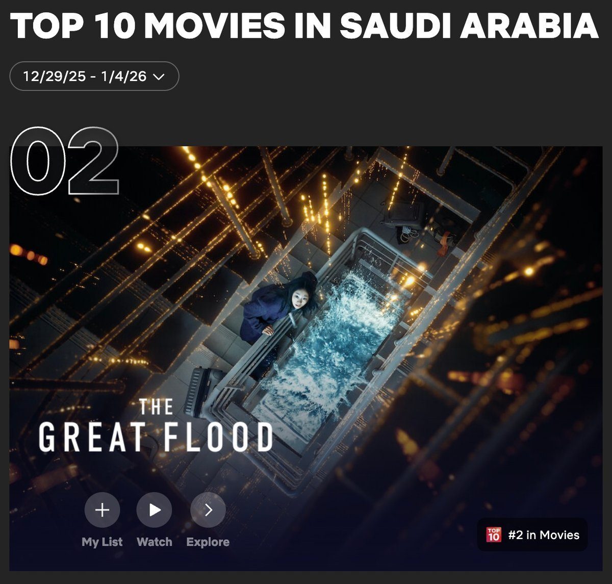
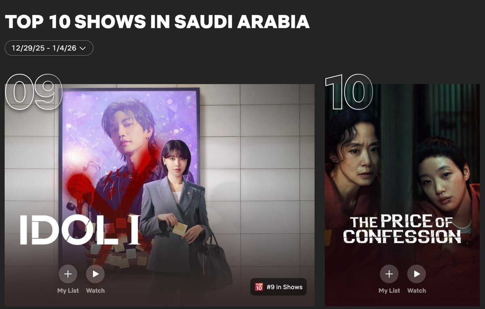
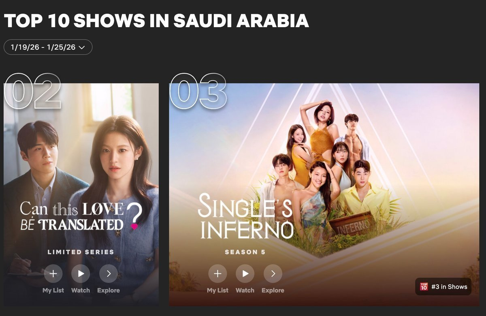

사우디아라비아 넷플릭스(Netflix) 시청 통계를 살펴보면, 2026년 1월 한 달간 한국 콘텐츠가 영화와 쇼 부문 전반에서 뚜렷한 존재감을 드러냈다. 액션·히어로 장르부터 로맨틱 코미디, 스릴러, 예능에 이르기까지 다양한 장르의 한국 콘텐츠가 연속적으로 상위 10(Top 10)에 진입하며, 특정 작품에 국한되지 않은 폭넓은 소비 흐름이 확인됐다. 특히 일부 작품은 공개 직후 최상위권에 오르며 초기 흥행력을 입증한 뒤, 여러 주 차에 걸쳐 안정적인 상위권을 유지해 눈길을 끈다.
영화 부문 - 〈대홍수〉, 1위 기록 후 안정적 상위 10(Top 10) 유지
영화 부문에서는 한국 영화의 초반 흥행력이 두드러졌다. 배우 김다미, 박해수 주연의 영화 〈대홍수〉(감독 김병우)는 2025년 12월 19일 공개 직후 사우디 넷플릭스 영화 부문에서 12월 마지막 주 1위를 기록했으며, 이어 1월 1주 차에는 2위에 오르며 초기 흥행력을 입증했다. 이후 2주 차 5위, 3주 차 8위로 순위가 점진적으로 조정됐으나, 연속 주차 10위권 이내 진입을 이어가며 사우디 시청자들 사이에서 안정적인 소비 흐름을 유지했다.


▲ 넷플릭스 영화 부문 12월 마지막 주 1위, 1월 1주 차 2위를 기록한 〈대홍수〉 — 출처: 넷플릭스(Netflix)
쇼 부문 - 한국 로맨틱 코미디·스릴러·예능, 10위권 고르게 분포
1월 사우디 넷플릭스 쇼 부문에서는 한국 드라마와 예능 콘텐츠가 월 초부터 중후반까지 장르 전반에 걸쳐 고르게 상위권에 분포하며 존재감을 드러냈다.
1월 1주 차에는 배우 이준호 주연의 8부작 액션·히어로 드라마 〈캐셔로〉(연출 이창민, 극본 이제인·전찬호)가 12월 26일 공개 직후 3위에 오르며 강한 초반 반응을 이끌어냈다. 해당 작품은 2주 차에도 7위를 기록하며 연속 주차 상위권을 유지했다. 한편, 12월 22일 공개된 12부작 드라마 〈아이돌 아이〉(연출 이광영, 극본 김다린)가 같은 기간에 9위를 차지했다. 또한 12월 5일에 공개된 전도연, 김도은 주연의 12부작 스릴러 드라마 〈자백의 대가〉(연출 이정효, 극본 권종관)도 1주 차 10위에 오르며, 월 초반부터 다수의 한국 드라마가 동시에 최상위권에 진입하는 흐름이 나타났다.
▲ 1월 2주차에 쇼부문 3위를 기록한 드라마 〈캐셔로〉 — 출처: 넷플릭스(Netflix)

▲ 1월 1주 차 9위 〈아이돌 아이〉, 10위 〈자백의 대가〉 — 출처: 넷플릭스
1월 16일 공개된 김선호, 고윤정 주연의 로맨틱 코미디 드라마 〈이 사랑 통역 되나요?〉(연출 유영은, 극본 홍정은·홍미란)는 1월 3주 차 7위로 출발한 뒤, 4주 차에는 2위까지 상승하며 사우디 넷플릭스 쇼 부문 상위권에 안착했다. 같은 기간 예능 프로그램 〈솔로지옥 시즌 5〉(연출 김재원 외, 작가 지현숙 외)가 3위를 기록하며 한국 예능 콘텐츠 역시 상위권에 안착했다. 또한 1월 17일 공개된 박신혜 주연의 드라마 〈언더커버 미쓰홍〉(연출 박선호·나지현, 극본 문현경)이 9위에 진입하며, 4주 차에는 총 세 편의 한국 드라마와 예능 콘텐츠가 동시에 쇼 부문 상위 10(Top 10)에 포진하는 성과를 거뒀다.

▲ 1월 4주 차 쇼부문 2위 〈이 사랑 통역 되나요?〉 — 출처: 넷플릭스
▲ 1월 4주 차 쇼부문 3위 〈솔로지옥 시즌5〉, 9위 〈언더커버 미쓰홍〉 — 출처: 넷플릭스
사진출처 및 참고자료
투둠 바이 넷플릭스(Tudum by Netflix), netflix.com